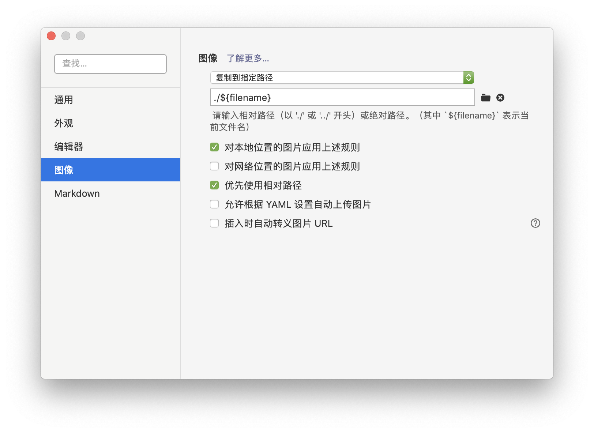

使用基于Nodejs的Hexo博客框架, 结合github.io页面, 快速搭建个人博客并发布
0 先决条件
- GitHub账号
1 工具准备
1 GITHUB仓库创建
创建新repository，名为username.github.io(username与github用户名一致)
2 安装相关工具
-
1
2
3
4
5# 使用brew安装
brew install nvm
# 添加进终端配置文件（.zshrc或.bash_profile)
export NVM_DIR=~/.nvm
[ -s "$NVM_DIR/nvm.sh" ] && \. "$NVM_DIR/nvm.sh"此处有个坑: nvm官方并不建议使用brew安装
Homebrew installation is not supported. If you have issues with homebrew-installed nvm, please brew uninstall it, and install it using the instructions below, before filing an issue.如果使用Homebrew安装，因为安装路径等原因, 在.nvm中会缺少nvm-exec和nvm.sh两个文件。导致每次启动终端都需要输入
source $(brew --prefix nvm)/nvm.sh才能使当前终端使用nvm命令解决方法有2
简单粗暴：在.zshrc（终端配置文件）中加入
source $(brew --prefix nvm)/nvm.sh曲线救国：(注意此方法curl命令可能被墙, 具体见nvm项目github)
卸载使用brew安装的nvm
brew uninstall nvm使用curl命令下载
1
curl -o- https://raw.githubusercontent.com/creationix/nvm/v0.35.2/install.sh | bash
终端配置文件加入
1
2
3export NVM_DIR="$HOME/.nvm"
[ -s "$NVM_DIR/nvm.sh" ] && \. "$NVM_DIR/nvm.sh" # This loads nvm
[ -s "$NVM_DIR/bash_completion" ] && \. "$NVM_DIR/bash_completion" # This loads nvm bash_completion
安装nodejs
1
nvm install stable
网上很多过期教程会建议使用
nvm install 4,nvm install 6, 实际安装后, node版本在7以下的都会抛出异常, 建议一步到位安装最新稳定版nodenvm/npm常用命令:
1
2
3
4
5
6
7
8
9
10
11# 切换nvm版本至 <number>开头的默认版本
nvm use <number>
#设置默认 node 版本为 0.12.7
nvm alias default 0.12.7
# 使用.nvmrc文件配置项目所使用的node版本
cd <项目根目录> #进入项目根目录
echo <number> > .nvmrc #添加 .nvmrc 文件
nvm use #无需指定版本号，会自动使用 .nvmrc 文件中配置的版本
node -v #查看 node 是否切换为对应版本
#安装 <module-name> 模块至全局目录，安装完成的路径是 /Users/<username>/.nvm/versions/node/<nvm-version>/lib/<module-name>
npm install -g <module-name>nvm与n的区别
- node 版本管理工具还有一个是 TJ 大神的 n 命令，n 命令是作为一个 node 的模块而存在，而 nvm 是一个独立于 node/npm 的外部 shell 脚本，因此 n 命令相比 nvm 更加局限。
- 由于 npm 安装的模块路径均为 /usr/local/lib/node_modules ，当使用 n 切换不同的 node 版本时，实际上会共用全局的 node/npm 目录。 因此不能很好的满足『按不同 node 版本使用不同全局 node 模块』的需求。
-
1
sudo npm install hexo-cli -g
2 hexo的使用入门
创建博客和基础配置
1
2hexo init username.github.io # 博客根目录<folder_name>
cd username.github.io更改博客根目录下的_config.yml文件
1
2
3
4
5
6
7title:
author:
language: zh-Hans #中文
theme: landscape
deploy:
type: git
repo: https://github.com/username/username.github.io.git更换主题
主题测评见文章hexo的主题比较
hexo初始化中自带landscape主题
1
2# 此处以next主题为例
git clone https://github.com/iissnan/hexo-theme-next themes/next进入themes/next, 打开_config.yml, 按照文件中的说明即可对主题进行基础配置
同时更改博客根目录中_config.yml文件的
theme: next写文章
博客根目录username.github.io下的source文件夹保存所有博客, 默认使用md语法
1
hexo new [layout] <title>
1
2
3
4
5
6
7
8
9
10---
title: Hexo博客搭建入门
date: 2020-02-16
tags: hexo js
categories:
- Code
- Guide
keywords: hexo js 前端 博客
---
Hello World!测试
hexo s安装使用hexo-deployer-git](https://link.jianshu.com/?t=https://github.com/hexojs/hexo-deployer-git)自动部署发布工具
1
2npm install hexo-deployer-git --save
hexo clean && hexo g && hexo d
hexo的使用进阶
基本命令
hexo init：新建一个网站hexo new [layout] --option <titile>：新建一个layout的文章，如果标题有空格，使用引号括起来-p自定义新文章的路径-r替换同名文章-s作为新文章的文件名和发布后的url
hexo generate生成静态文件(只生成有改动的文件)-d生成后立刻部署-w监视文件变动-b抛出生成过程中的异常-f强制重新生成全部文件-c最大同时生成文件的数量
hexo publish [layout] <filename>发表草稿hexo server打开本地服务器hexo deploy部署hexo render <file1> [file2]渲染文件-o设置输出路径
写作
layout：post/page/draft
如果你不想你的文章被处理，你可以将 Front-Matter 中的
layout:设为false。title：在_config.yaml中编辑参数改变默认名称
scaffold：根须scaffold文件夹内对应的文件来建立文件
Font-matter
layout：布局
title：标题/文件名
date：建立日期
update：更新日期
comments：开启文章的评论功能
tags：标签
categories：分类
如果需要为文章添加多个分类
1
2
3
4categories:
- [Diary, PlayStation]
- [Diary, Games]
- [Life]
permalink：覆盖网址
keywords：仅用于meta标签和Open Graph的关键词
标签插件
并不建议过多使用这些标签，这些标签是hexo的私有语法，迁移是会有不便，建议还是多使用md语法
hexo官网关于个别标签的演示并不完整，icarus主题的文档中有不同插件使用的Demo
引用块(quote) 等同md语法的<
1
2
3{% blockquote [author[, source]] [link] [source_link_title] %}
content
{% endblockquote %}代码块(code) 等同md语法的```
1
2
3{% codeblock [title] [lang:language] [url] [link text] [additional options] %}
code snippet
{% endcodeblock %}- line_number:flase
- highlight:true
- first_line:13 行号从第几开始
- mark:1,4-7 下划线特定行，即第1行和4到7行
- wrap:true
Pull Quote
1
2
3{% pullquote [class] %}
content
{% endpullquote %}jsFiddle
1
{% jsfiddle shorttag [tabs] [skin] [width] [height] %}
Gist(一般短代码直接插入markdown，长代码才用gist)
1
{% gist gist_id [filename] %}
iframe
1
{% iframe url [width] [height] %}
Image
1
{% img [class names] /path/to/image [width] [height] '"title text" "alt text"' %}
Link
1
{% link text url [external] [title] %}
Include
1
{% include_code [title] [lang:language] [from:line] [to:line] path/to/file %}
Youtube/Vimeo
1
2{% youtube video_id %}
{% vimeo video_id %}引用文章(我一般是当做直接引用链接fffff)
1
2{% post_path filename %}
{% post_link filename [title] [escape] %}引用文章的资源(关于资源文件夹的设置见本文图片部分
1
2
3{% asset_path filename %}
{% asset_img filename [title] %}
{% asset_link filename [title] [escape] %}Raw 插入Swig标签
1
2
3{% raw %}
content
{% endraw %}文章摘要：在
<!--more-->之前的文字可能会被Font Matter中的
excerpt部分覆盖(需要插件支持)
图片
资源文件夹 : 最简单的方法就是将它们放在
source/images文件夹中。然后通过类似于的方法访问它们。组织化资源管理方式 : 通过将
config.yml文件中的post_asset_folder选项设为true来打开, 当资源文件管理功能打开后，Hexo将会在你每一次通过hexo new [layout]命令创建新文章时自动创建一个文件夹。这个资源文件夹将会有与这个文章文件一样的名字。将所有与你的文章有关的资源放在这个关联文件夹中之后，你可以通过相对路径来引用它们1

需要注意, 使用md时,在首页显示会出现错误, 使用标签插件可以解决
1
{% asset_img 图片名称.jpg This is an example image %}
tips
在typora的设置中进行以下修改可以与hexo同步：

组织化资源管理的两种方式都会使图片失去本地编辑器上的可读性
3. 实际使用中会遇到部分主题对标签插件渲染出现莫名其妙的错误(vexo)，或者主题不支持(terminal)，所以除非需要在首页的展示缩略图，建议使用markdown语法的方式。